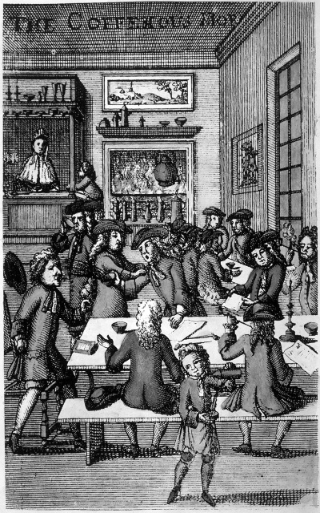
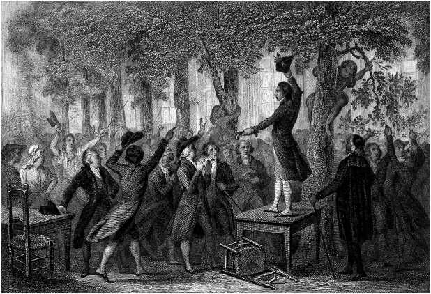
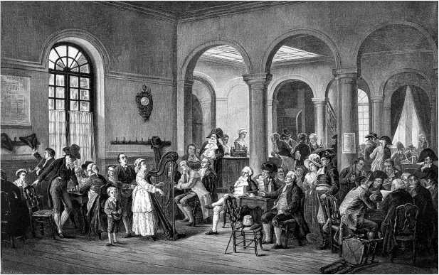

История в бокалах . Кофейный интернет.


Вы, остроумные и веселые, слушайте новости
отовсюду, от голландцев, датчан и евреев.
Приходите в кофейню, на встречу,
от жизни проблем и суровостей…
В кофейне все становится правдой –
и для нищих, и для архиереев.
Кофейно-социальная сеть
В Европе XVII века для того, чтобы услышать последние бизнес-новости, узнать, как изменились цены на сырьевые товары, ознакомиться с политическими сплетнями, отзывами о новой книге или о последних научных разработках, достаточно было сходить в кофейню. Там, заплатив за чашку кофе, можно было читать свежие памфлеты и информационные бюллетени, общаться с другими посетителями, совершать сделки, участвовать в литературных или политических дискуссиях. Для ученых, бизнесменов, писателей и политиков кофейня была источником информации, зачастую таким же ненадежным, как современные вебсайты, обычно педалирующие определенную тему или точку зрения.
Современник писал (далее упоминаются названия популярных изданий того времени. – Прим, перед.): «Кофейни особенно удобны для свободной «Беседы» (Conversation) и легкого чтения (англ, идиома at an easy rate, Rate также название газеты. – Прим, перед.) различных печатных «Новостей» (News), чтобы послушать «Голоса Парламента» (Votes of Parliament), пролистать «Издания» (Prints), которые выходят «Еженедельно» (Weekly) или от случая к случаю. Среди них «Лондонская газета» (The London Gazette), которая выходит по «Понедельникам» (Mondays) и «Четвергам» (Thursdays), «Ежедневный листок» (The Daily Courant), который выходит каждый день, кроме «Воскресенья» (Sunday), а также «Почтальон» (The Postman), «Быстрая почта» (Flying-Post) и «Почтовый курьер» (Post-Boy) по «Вторникам» (Tuesdays), «Четвергам» (Thursdays) и «Субботам» (Saturdays) и, конечно, «Английская почта» по «Понедельникам» (Mondays), «Средам» (Wednesdays) и «Пятницам» (Fridays) и «Комментарии» к ним (Postscripts)». Благодаря интересу к этим изданиям кофейни становились популярными и в провинции.
В зависимости от предпочтений своих клиентов одни кофейни вывешивали прейскуранты на товары, акции или грузоперевозки, другие – информационные бюллетени, брошюры, бесплатные рекламные листовки и плакаты, третьи подписывались на зарубежные информационные бюллетени. В Лондоне к 1700 году были открыты сотни кофеен, каждая с оригинальным названием и фирменным знаком над дверью. Зачастую они становились чем-то вроде профессиональных клубов, куда актеры, музыканты или матросы могли прийти в поисках работы. Кофейни в окрестностях Сент-Джеймс и Вестминстера посещали политики; те, что находились возле собора Святого Павла, стали местом встречи священнослужителей и богословов. Литературная тусовка собиралась в кофейне Will’s в Ковент-Гарден. Там в течение трех десятилетий поэт Джон Драйден и члены его литературного кружка обсуждали новые стихи и пьесы. Книги продавали в кофейне Man’s на Чансери-Лейн.
Кофейни в районе Королевской биржи служили офисами для бизнесменов, которые приходили туда как на работу в одно и то же время, чтобы партнеры могли без труда их найти. Столь узкая специализация позволила журналу «Татлер», основанному в 1709 году, использовать названия кофеен в качестве тематических рубрик. В его первом номере говорилось: «Все рассказы об интригах, удовольствиях и развлечениях находятся в разделе «Кофейня White’s Chocolate-house», поэзия – под рубрикой «Кофейня Will’s», образование – «Кофейня Grecian», международные и внутренние политические новости – «Кофейня St. James’s».
Ричард Стил, редактор «Татлера», указал почтовый адрес кофейни Grecian (место встреч образованного сословия) как свой. После создания Лондонской пенни-почты в 1680 году стало обычной практикой получать корреспонденцию на почтовый адрес кофейни. (Лондонская пенни-почта – London Penny Post – частная городская почта в Лондоне. Почтовый сбор за письмо или посылку весом до 1 фунта составлял 1 пенни, что и отразилось в названии почты. – Прим, перев.) Постоянные посетители появлялись в кофейне один или два раза в день, выпивали чашечку кофе, узнавали последние новости и проверяли, нет ли для них новой почты. «Иностранцы отмечали, что кофейня была тем, что особенно отличало Лондон от других городов, – писал историк XIX века Томас Маколей в своей «Истории Англии». – Кофейня была домом лондонцев, и те, кто хотел найти джентльмена, не спрашивали, где он живет, на Флит-стрит или Чансери-Лейн, а какую кофейню – Rainbow или Grecian – посещает». Люди с разносторонними интересами были завсегдатаями нескольких заведений. Например, торговцы перемещались между «финансовой» кофейней и теми, что специализировались на перевозках в Балтийском, Вест-Индском или Ост-Индском регионах. Широту интересов английского ученого Роберта Гука отражают его посещения около 60 лондонских кафе в 1670-х годах, описанных в его дневнике.

Лондонская кофейня конца XVII века
Слухи, новости и сплетни быстро распространялись по этой кофейной сети, и иногда посетители одного заведения бежали в другое, чтобы сообщить о таких крупных событиях, как война или смерть главы государства. («Великий визирь задушен», – записал Гук, узнавший эту новость в кофейне Jonathan’s 8 мая 1693 года.) Вот сообщение, опубликованное в Spectator в 1712 году: «Несколько лет назад один парень рассказал какую-то небылицу в кофейне на Чаринг-Кросс утром в восемь часов, а затем, путешествуя по городским кофейням до восьми вечера (в это время он пришел в клуб и дал полный отчет своим друзьям), наблюдал, как его история сначала «превратилась» в роман в творческой кофейне Will’s в Ковент-Гардене, была признана опасной в кофейне Child’s и «оказала серьезное влияние» на курс акций у Jonathan’s».
Кофейни, формируя и отражая общественное мнение, служили уникальным мостом между государственным и частным мирами. Теоретически кофейня была общественным местом, открытым для любого человека (за исключением женщин, по крайней мере в Лондоне), но непринужденная обстановка, удобная мебель и привычный круг общения создавали уютную, почти домашнюю атмосферу. Социальные различия оставались за порогом. При условии соблюдения определенных правил все клиенты были равны. По словам одного поэта, «джентри, торговцы, все приветствуются здесь и могут без ущерба для своего достоинства сидеть за одним столом». Связанная с алкоголем практика произнесения заздравных тостов была запрещена, а каждый, кто начинал ссору, должен был искупить вину, заказав для всех присутствующих кофе.
Значение кофеен было наиболее очевидно в Лондоне, который в период с 1680 по 1730 год потреблял больше кофе, чем какой-либо другой город на земле. Дневники интеллектуалов того времени усеяны ссылками на кофейню. Слова «сюда в кофейню» часто встречаются в знаменитом «Дневнике» Сэмюэля Пипса. Запись за 11 января 1664 года описывает дух космополитизма, царивший в кофейнях того периода. «Там обсуждались вопросы как глубокие, так и тривиальные, и вы никогда не знали, с кем могли бы встретиться или что могли бы услышать… Сюда в кофейню зашел сэр У. Петти и капитан Грант, и мы говорили о музыке. Там был молодой джентльмен, я полагаю, что он купец, его имя мистер Хилл, который путешествовал и, я думаю, понимает в этом вопросе. Мы также говорили об искусстве памяти… и на другие самые интересные темы. Давно я не был в такой прекрасной компании. Я должен позаботиться о том, чтобы знакомство с этим мистером Хиллом продолжилось… Разговор зашел также о полковнике Тернере, о грабеже, за который он, вероятно, будет повешен».
Дневник Гука показывает, что он посещал кофейни ради дискуссий с друзьями и коллегами, переговоров с создателями приборов и проведения научных экспериментов. В феврале 1674 года он перечисляет темы, обсуждавшиеся в Garraway’s, престижной кофейне того времени: предполагаемый обычай индийских торговцев держать вещи не только руками, но и ногами; потрясающая высота пальм; восхитительный вкус королевского ананаса; новый экзотический плод из Вест-Индии.
Кофейни были центрами самообразования и инноваций, литературы и философии, в некоторых случаях – политических интриг, но прежде всего местом для обмена новостями и сплетнями. В совокупности они функционировали как интернет эпохи Просвещения.
Инновации и спекуляции
Первая кофейня в Западной Европе открылась не в центре торговли и бизнеса, а в университетском городе Оксфорд в 1650 году, за два года до лондонского заведения Паскуа Розе. Хотя связь между кофе и научным процессом сегодня для всех очевидна, изначально это было не так. Когда кофе стал популярен в Оксфорде и продажи кофеен выросли, власти университета пытались их прикрыть. Энтони Вуд, историк и биограф оксфордских знаменитостей, был среди тех, кто осудил энтузиазм по поводу нового напитка. «Почему происходит постоянное и серьезное уклонение от учебы в университете? – спрашивал он. – Ответ: из-за кофейни, где они проводят все свое время». Но оппоненты кофе ошибались – именно благодаря академической дискуссии кофейни стали популярными, особенно среди тех, кто
интересовался развитием науки или «естественной философией», как ее называли в то время. Кофе не только не снижал интеллектуальную активность, но, наоборот, стимулировал ее. Кофейни называли «копеечными университетами», так как каждый мог принять участие в дискуссии, заплатив пенни за чашку кофе. Как говорилось в песенке того времени:
Такой великий универ,
здесь нет и места лени.
Легко стать можешь школяром,
лишь уплати ты пенни.
Среди молодых людей, полюбивших кофейные дискуссии во время учебы в Оксфорде, был Кристофер Рен. Его главным образом вспоминают сегодня как архитектора собора Святого Павла в Лондоне, но Рен был одним из ведущих ученых и основателей Королевского общества, учрежденного в Лондоне в 1660 году. Его члены, в том числе Гук, Пипс и Галлей (астроном, в честь которого назвали комету), часто собирались в кофейне после собраний общества, для того чтобы продолжить дискуссию. Типичный пример: 7 мая 1674 года Гук записал в своем дневнике, что продемонстрировал улучшенную форму астрономического квадранта в Королевском обществе, а затем повторил демонстрацию в кофейне Garraway’s, обсудив результат эксперимента с Джоном Фламстидом, первым королевским астрономом. В отличие от формальной атмосферы, царившей на заседаниях общества, непринужденная обстановка кофейни как нельзя лучше способствовала дружеской беседе и обмену идеями.
В дневнике Гука упоминаются темы дискуссий. На одном из собраний в кофейне Man Гук и Рен обсуждали прошедшую демонстрацию движения пружин. «Много размышляли о движении пружин. Он высказал свою идею… Я – свою… Я рассказал ему о своих философских весах… Он рассказал мне о своих, механических». Другая запись рассказывает об обмене рецептами лекарств в кофейне St. Dunstan. Такие дискуссии позволяли ученым отрабатывать новые теории и идеи. Гук, однако, имел репутацию хвастливого, любящего поспорить и склонного к преувеличениям человека. После спора с Гуком в Garraway’s Фламстид жаловался: «Давно замечено, что Гук часто противоречит наугад, не имея никаких оснований, кроме необоснованных суждений… Он утомил меня большим количеством слов, убеждая компанию, что я не понимаю ничего в вещах, в которых разбирается только он».
Но хвастовство и безапелляционность Гука невольно поспособствовали публикации величайшей книги английской Научной революции. Январским вечером 1684 года в кофейне шел научный спор между Гуком, Галлеем и Реном. Галлей задался вопросом, согласуются ли эллиптические формы планетных орбит с гравитационной силой, обратно пропорциональной квадрату расстояния. Гук заявил, что это так и только закон обратного квадрата может объяснить движение планет, чему у него есть математическое доказательство. Но Рен, который и сам пытался, но не смог найти решение, никак не соглашался. Галлей позже вспоминал, что тогда Рен предложил «дать мистеру Гуку или мне два месяца, чтобы представить убедительные доказательства. Победитель получал приз в 40 шиллингов». Однако Галлей и Гук не справились с этой задачей, и приз остался невостребованным.
Несколько месяцев спустя Галлей посетил в Кембридже Исаака Ньютона. Вспоминая дискуссию в кофейне, он задал Ньютону тот же вопрос: согласуется ли его теория гравитации с эллиптической формой орбит? Как и Гук, Ньютон утверждал, что он это уже доказал, хотя и не мог показать решение. Однако после ухода Галлея Ньютон засел за работу и в ноябре отправил ему статью, в которой доказывал, что планеты вращаются вокруг Солнца по эллиптическим орбитам. Эта статья, как оказалось, была лишь началом больших научных свершений. Вопрос Галлея подтолкнул Ньютона к формализации результатов многолетней работы и созданию одного из величайших в истории научных трудов. Опубликованные в 1687 году «Математические начала натуральной философии» (Philosophiae naturalis principia mathematica), общеизвестные как «Принципы», доказывали, что закон всемирного тяготения объясняет движение как земных, так и небесных тел, от (вероятно, апокрифического) падающего яблока до орбит планет. Этот труд Ньютона заложил фундамент естествознания Нового времени, открыв новую эпоху в физике и математике.
Гук настаивал на том, что это он подал Ньютону идею закона обратного квадрата в письмах, которыми они обменивались несколькими годами ранее. Но когда он упомянул об этом в другой дискуссии в кофейне после презентации первого тома «Принципов» Королевскому обществу в июне 1686 года, коллеги его не поддержали. Слова Гука не были подтверждены научными публикациями, и у него была репутация человека, который «все предвидел и понимал раньше всех» (хотя во многих случаях так на самом деле и было).
«Хотя бы в кофейне, – писал Галлей Ньютону, – г-н Гук пытался добиться, с его точки зрения, правды, что это он подал Вам основную идею. Но я обнаружил, что общим мнением в кофейне было, что… все-таки вы должны считаться изобретателем». Несмотря на протесты Гука, кофейня, а затем и история вынесли свой вердикт.
К концу XVII века распространение научных знаний через кофейни Лондона приобрело новую, более структурированную форму. Начало этому процессу положила серия лекций по математике в кафе The Marine, недалеко от Сент-Поле, в 1698 году. Оснащенный новейшими микроскопами, телескопами, призмами и насосами, Джеймс Ходжсон, в прошлом помощник Фламстида, зарекомендовал себя как один из самых известных популяризаторов науки в Лондоне. Его курс лекций по естественной философии обещал предоставить «лучшую и надежную копилку для всех полезных знаний» и сопровождался демонстрацией свойств газов, природы света и результатов последних достижений в астрономии и микроскопии. Кофейня Swan на Треднидл-стрит специализировалась на лекциях по математике и астрономии, а владельцы кофейни в Саутварке преподавали математику, издавали книги по навигации и продавали научные приборы. Специальные лекции по астрономии проходили в кофейне Button’s и в кофейне The Marine, чтобы посетители могли одновременно наблюдать затмение солнца.
Эти лекции служили как коммерческим, так и научным интересам. Моряки и торговцы поняли, что научные открытия имеют практическую ценность, способствуя совершенствованию судоходства и, следовательно, коммерческому успеху. Как заметил один английский математик в 1703 году, математика стала «бизнесом торговцев, моряков, плотников, геодезистов и т. п.». Предприниматели и ученые объединились, чтобы учреждать компании, использовать новые изобретения и открытия в области навигации, добычи ископаемых и производства, прокладывая путь для промышленной революции. Именно в кофейнях наука и торговля встречались друг с другом.
Кофейный дух инноваций распространился и на финансовую сферу, что привело к появлению новых бизнес-моделей. Разумеется, не все предприятия, рожденные в кофейнях, добились успеха. Компания Южных морей, обанкротившаяся в сентябре 1720 года, разорила тысячи инвесторов, владевших акциями этой финансовой пирамиды в таких кафе, как Garraway’s. Напротив, самым известным примером успешного бизнеса стала кофейня, открытая в Лондоне в конце 1680-х годов Эдвардом Ллойдом. Капитаны кораблей, судовладельцы и торговцы приходили сюда обменяться последними новостями. Ллойд начал собирать и обобщать эту информацию, дополненную отчетами иностранных корреспондентов, в регулярном информационном бюллетене – первоначально рукописном, а затем печатном. В итоге Lloyd’s стала самым известным среди судовладельцев местом заключения договоров страхования судов и грузов. В 1771 году группа из 79 страховщиков создала Общество Ллойда. По сей день лондонский Ллойд – ведущий игрок на мировом рынке страхования.
Многие кофейни функционировали как фондовые биржи. Первоначально акции наряду с другими товарами торговались на Королевской бирже, но по мере роста числа зарегистрированных на бирже компаний (с 15 до 150 в течение 1690-х годов) и увеличения торговой активности правительство приняло Акт об уменьшении количества брокеров и биржевых торговцев. В знак протеста против торговли акциями в рамках биржи маклеры перебрались в кофейни на близлежащих улицах, в частности, в Jonathan’s на Биржевой аллее. Реклама одного брокера 1695 года гласит: «Джон Кастайн в Jonathan’s на Биржевой аллее покупает и продает все ценные бумаги, льготные билеты, а также любые другие акции и облигации».
По мере расширения этого бизнеса стали очевидными недостатки неформального характера торговли в кофейнях. Брокеров, которые не выполняли свои обязательства по оплате, не допускали в Jonathan’s; и хотя не было никакого способа препятствовать их деятельности в другом месте, изгнание из Jonathan’s существенно вредило бизнесу. Имена «изгнанных» заносили на доску, чтобы они не могли вернуться спустя несколько месяцев. Тем не менее проблемы остались, поэтому в 1762 году группа из 150 брокеров заключила соглашение с владельцем Jonathan’s: в обмен на ежегодную подписку им предоставлялось право на использование помещений и изгнание недобросовестных коллег. Но эта схема была успешно оспорена в суде на том основании, что кофейня – это общественное место, в которое может войти каждый желающий. В 1773 году группа торговцев из Jonathan’s отпочковалась и ушла в новое здание. Название «Новый
Джонатан» просуществовало недолго. Как сообщает журнал «Джентльмены», «Новый Джонатан» пришел к решению, что его следует называть Фондовой биржей и это должно быть написано над дверью». Это учреждение стало предшественником Лондонской фондовой биржи.
Инновационные процессы в финансовой сфере – создание акционерных обществ, купля-продажа акций, развитие схем страхования и финансирования государственного долга – достигли кульминации в результате перемещения мирового финансового центра из Амстердама в Лондон. Сегодня этот период принято называть финансовой революцией. Дорогостоящие колониальные войны сделали ее необходимой, а интеллектуальная среда и спекулятивный дух кофейни – неизбежной. Финансовым эквивалентом «Принципов» было «Исследование о природе и причинах богатства народов» шотландского экономиста Адама Смита. Он сформулировал нарождающуюся доктрину капитализма, согласно которой лучший способ для правительств поощрять торговлю и процветание – предоставить людей самим себе. Смит написал большую часть своей книги в кофейне The British, популярном месте встречи шотландских интеллектуалов, которые стали первыми читателями и критиками его книги. Таким образом, лондонские кофейни играли роль тигля для научных и финансовых открытий, формировавших современный мир.
Шашка революции
В то время как Англия варилась в котле финансовой революции, во Франции расцветала эпоха Просвещения. Величайшим философом-просветителем XVIII века был Вольтер. В 1726 году за оскорбление дворянина он был заключен в Бастилию и освобожден с условием, что покинет Францию. Вольтер отправился в Англию, где проникся идеями научного рационализма Исаака Ньютона и эмпиризма Джона Локка. Подобно тому, как открытие Ньютона повлияло на дальнейшее развитие физики как науки, Локк сделал то же самое для политической философии. По его мнению, все люди рождаются равными, изначально хорошими и имеют право на счастье. Ни один человек не должен вмешиваться в чужую жизнь, отнимать здоровье, свободу или имущество. Воодушевленный этими радикальными идеями, Вольтер вернулся во Францию и изложил свои взгляды на политическое устройство Франции и Англии в «Философских письмах». Книга была немедленно запрещена.
Подобная судьба постигла и «Энциклопедию» Дени Дидро и Жана Лерона Д’Аламбера. В первый том, вышедший в 1751 году, составители включили Вольтера и таких ведущих мыслителей, как Жан-Жак Руссо и Шарль Луи Монтескье, на которого, как и на Вольтера, оказал большое влияние Локк. Неудивительно, что рациональный, светский взгляд на мир, основанный на научном детерминизме, осуждающем церковные и правовые злоупотребления властью, разгневал церковных иерархов, которые также лоббировали запрет «Энциклопедии». Дидро тем не менее продолжал свою работу и закончил ее в 1772 году, причем каждый из 28 томов был тайно доставлен подписчикам. В качестве офиса Дидро использовал парижское Cafe de la Regence. В мемуарах он вспоминал, что жена каждый день давала ему 9 су, чтобы заплатить за кофе.
Как и лондонские, парижские кофейни были излюбленным местом встреч интеллектуалов, но лондонская кофейня служила площадкой для непрерывной политической дискуссии и зачастую играла роль штаб-квартиры политических партий. Английский писатель Джонатан Свифт писал, «что любой другой доступ к людям во власти не дает человеку больше правды или света, чем общение с политиками в кофейне». Кофейня Miles’s была местом встречи «Любительского парламента», регулярной дискуссионной группы, основанной в 1659 году. Сэмюэл Пипс заметил: «Дебаты в этом парламенте были самыми изобретательными и умными, которые я когда-либо слышал или ожидал услышать, и я с большим рвением там общался. Аргументы в настоящем парламенте были гораздо более плоскими». После дебатов, отмечает Пипс, в «Любительском парламенте» проводят голосование с использованием «деревянного оракула» или урны для голосования – новинки в то время. Неудивительно, что один французский посетитель Лондона, аббат Прево, назвал лондонские кафе, «где вы имеете право читать все газеты за и против правительства», «местами английской свободы».
Ситуация в Париже была совсем иной. Кофеен было в изобилии – 600 заведений, открытых к 1750 году, как и в Лондоне, ориентировались на определенные социальные или бизнес-группы. Поэты и философы собирались в Cafe Parnasse и Cafe Procope. Среди постоянных посетителей были Руссо, Дидро, Д’Аламбер, американский ученый и государственный деятель Бенджамин Франклин. У Вольтера в Cafe Procope были любимый стол и стул, а также репутация потребителя десятков чашек кофе в день. Актеры собирались в Cafe Anglais, музыканты в Cafe Alexandre, армейские офицеры в Cafe des Armes, в то время как Cafe des Aveugles имело репутацию борделя. В отличие от салонов, часто посещаемых аристократией, французские кафе были открыты для всех, даже для женщин. Вот один из рассказов XVIII века: «Кофейни посещают уважаемые люди обоих полов. Мы видим среди них множество различных типов. Это мужчины, прожигающие жизнь, кокетливые женщины, аббаты, деревенские парни, журналисты, политические деятели, пьяницы, картежники, паразиты, брачные и финансовые авантюристы, разные интеллектуалы – одним словом, нескончаемая серия людей».
На первый взгляд, в рамках кафе мечта мыслителей Просвещения об эгалитарном обществе была воплощена в жизнь. Но обмен информацией, как в устной, так и в письменной форме, был предметом строгого государственного надзора. Жесткие ограничения свободы печати привели к появлению рукописных информационных бюллетеней с парижскими сплетнями, которые размножали десятки переписчиков и отправляли по почте подписчикам в Париже и за его пределами. (Они не нуждались в одобрении правительства, поскольку не были напечатаны.)
Отсутствие свободной прессы также означало, что стихи и песни, передаваемые на клочках бумаги, наряду с журнальными сплетнями были важным источником новостей для многих парижан. Несмотря на это, посетители должны были следить за своими словами, потому что кафе были наводнены шпионами. Любой, кто выступал против государства, рисковал оказаться в Бастилии. В архивах Бастилии содержатся сотни сообщений полицейских информаторов о содержании бесед, подслушанных в кафе. «В Cafe de Боу кто-то сказал, что король нашел новую любовницу, что ее зовут Гонтау и что она красивая женщина, племянница герцога Ноайля», – говорится в одном отчете 1720-х годов. «Жан-Луи Леклерк сделал замечание в Cafe Procope, что никогда не было худшего короля, что суд и министры заставляют короля заниматься постыдными вещами, которые совершенно отвращают его от народа», – говорится в другом донесении, 1749 года.
Таким образом, несмотря на интеллектуальные достижения эпохи Просвещения, прогресс в социальной и политической сферах тормозился омертвевшим старым режимом. Богатая аристократия и духовенство, составлявшие всего лишь 2 процента населения, были освобождены от налогов, поэтому все, и бедные сельские жители, и представители буржуазии, были недовольны властью аристократии и их привилегиями. Франция безуспешно пыталась справиться с нарастающим финансовым кризисом, вызванным, главным образом, участием в войне Америки за независимость, и парижские кофейни стали эпицентром революционного брожения. По словам одного очевидца, побывавшего в Париже в июле 1789 года, кофейни «не только переполнены внутри, но и окружены толпами у дверей и окон, люди с открытым ртом слушают ораторов, выступающих со стульев или столов, каждый для своей маленькой аудитории. Страсть, с которой их слушали, и гром аплодисментов, которые они получали за малейший намек на жесткое отношение или даже насилие в отношении правительства, поражают».

Выступление Камиля Демулена 12 июля 1789 года у Cafe’ de Foy
Радикальные общественные настроения и неудачная попытка собрания нотаблей (собрание высшей аристократии и духовенства) разобраться в финансовом кризисе побудили короля Людовика XVI впервые за более чем 150 лет созвать Национальное собрание. Однако в депутатском корпусе произошел раскол, король отправил в отставку министра финансов Жака Неккера и призвал на помощь армию. Это усугубило напряжение в обществе, поскольку Неккер был единственным членом правительства, которому доверяли люди. Толпы возмущенных парижан собрались в садах Пале-Рояля, и, наконец, в Cafe de Foy во второй половине дня 12 июля 1789 года молодой адвокат Камиль Демулен запустил маховик Французской революции. Его призыв «К оружию, граждане! К оружию!» был услышан, и Париж погрузился в хаос. Спустя два дня Бастилия была разгромлена разъяренной толпой. Французский историк Жюль Мишле впоследствии отмечал, что те, кто собирался изо дня в день в Cafe Procope, «проницательным взглядом увидели в глубинах своего черного напитка свет революции». Революция буквально началась в кафе.
Напиток разума
Сегодня потребление кофе и других напитков с кофеином настолько распространено, что в замысловатую историю кофе и сумасшедшую популярность первых кофеен трудно поверить. Современные кафе бледнеют по сравнению со своими прославленными предками. Но некоторые вещи не изменились. Люди по-прежнему встречаются за чашкой кофе, чтобы поговорить, обменяться идеями и информацией. Как в уютных кафе, так и на академических конференциях и деловых встречах это все еще напиток, облегчающий сотрудничество без риска потери контроля над собой.

Парижское кафе в конце XVIII века
Оригинальная культура кофейни, пожалуй, лучше всего сохраняется в интернет-кафе, а также в офисах и конференц-залах сетевых компаний. И неудивительно, что нынешний центр культуры потребления кофе, город-дом крупнейшей сети Starbucks в Сиэтле, расположен там, где квартируют крупнейшие в мире интернет-компании. Ассоциация кофе с инновациями и информацией имеет длинную родословную.